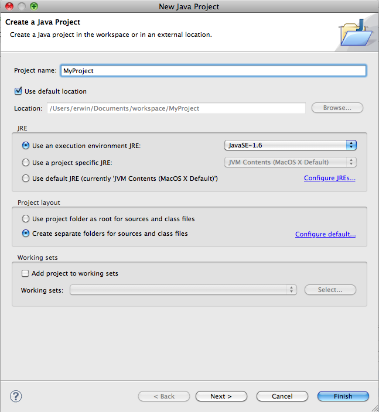
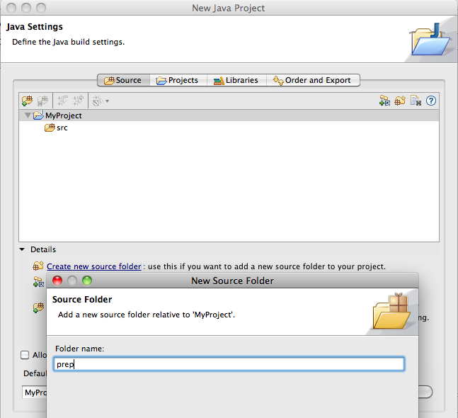
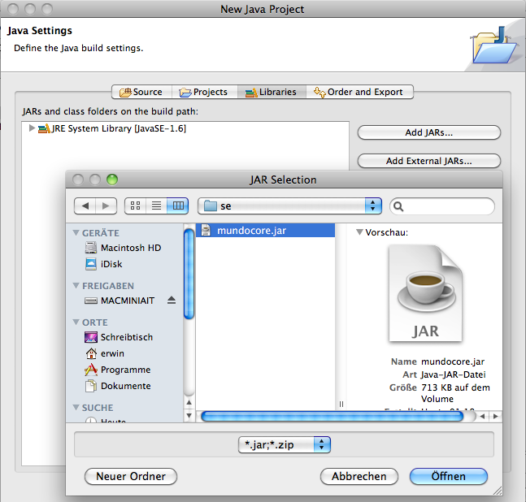
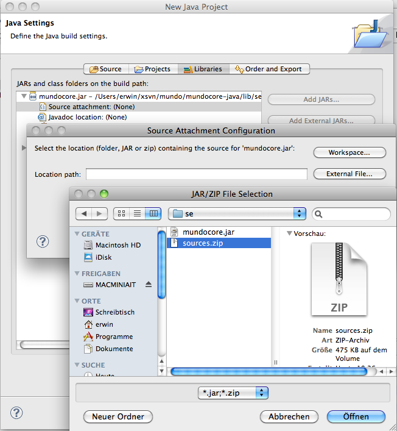
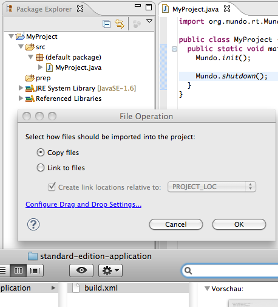

Creating a New Project in Eclipse
This tutorial shows how to create a new project in Eclipse with the correct build and configuration files.
Creating Eclipse Projects
To create a project in Eclipse, perform the following steps:
Create a new
Java Project. Make sure that you select:
Create separate source and output folders:

In the Source tab, select
Create new source folder and name it
prep:

In the Libraries tab, select
Add External JARs. Now add
lib/mundocore.jar:

Then expand the new entry, select
Source Attachment, click
Edit, and select
sources.zip from the MundoCore distribution:

Copy a buildfile template (e.g.,
samples/buildfiles/standard-edition-application/build.xml) into the main project directory. You can use drag&drop, then select
copy files:

Also copy
build.properties from the
config folder to the main project directory.
Now open
build.xml and edit a few settings:
<project name="NONAME" default="runscript" basedir=".">
<property file="build.properties"/>
<property name="main-class" value="MAINCLASS"/>
...
Change the
name of the project and the
name of the main class, e.g., to:
<project name="MyProject" default="runscript" basedir=".">
<property file="build.properties"/>
<property name="main-class" value="Main"/>
...
Now the build environment is set up. You can start the build process by selecting
build.xml and
Run As > Ant Build.
Notes
- If you are building primarily with the compiler embedded in Eclipse, you should also change the default build target to
preprocess. Running build.xml then only invokes the preprocessor and no other build steps. However, you may want run build.xml with target runscripts at least once, to get the run scripts for your application.
- It is not necessary to run the preprocessor each and every time the program is compiled. However, it is important to re-run the preprocessor when metadata information, serializable classes, or remote interfaces change.